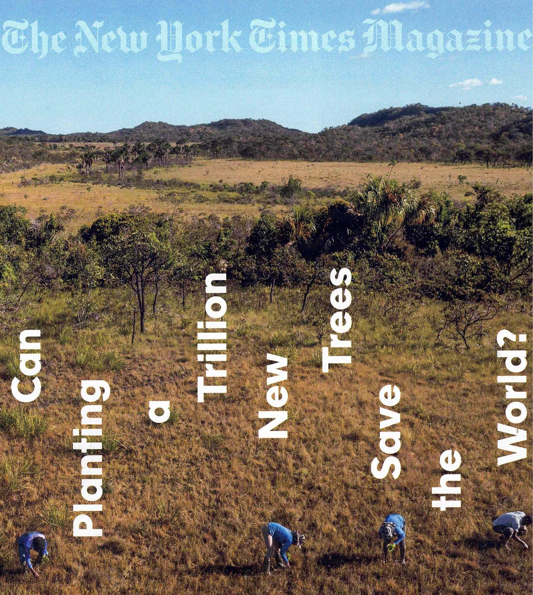
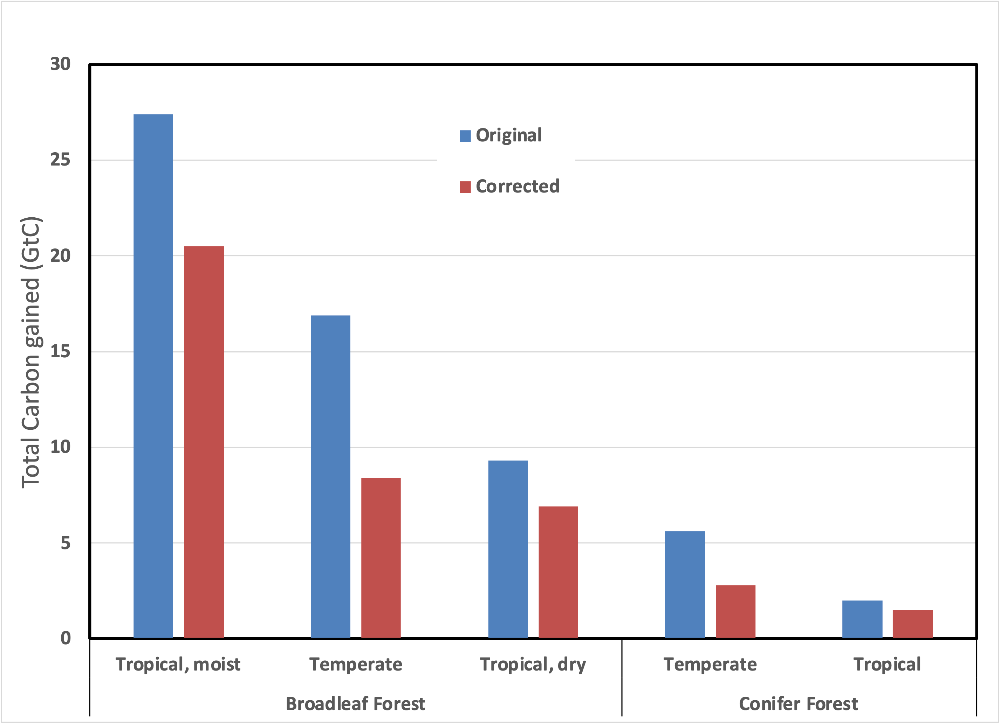

The cover of the July 17, 2022 issue of the New York Times asked, “Can planting a trillion new trees save the world?” referring to an article by Zach St. George entitled “The Trouble with Trees”. To summarize the article in a sentence, “There’s a math problem with that.”

The origin is a male version of Greta Thunberg. In 2007, Felix Finkbeiner, a nine-year-old German boy, proposed planning a million trees in every country as part of a fourth-grade class project. Because kids are gold both to politicians and reporters, by the time he was 13, Felix was speaking before the United Nations. A “million” became a “billion,” and then the more alliterative “Trillion Trees”. It grew from a fourth-grade project into a “Save the Children” style fundraising campaign. Now, about a dozen organizations have adopted the marketing concept, each promising to plant a tree for every $, €, or £ contribution.
Analyzing the data further reveals pretty obvious errors in the math. As Texas A&M grasslands ecologist Joseph Veldman pointed out to the Times, the carbon accounting by scientists is spurious. He said that the math is “the carbon-accounting equivalent of you or me buying a house for $100K, fixing it up with $50K of improvements, selling it for $200K, then bragging about how we made $200K in profit.” In other words, the land being planted isn’t barren, to begin with, so counting the capture of carbon by a tree (over its entire lifetime) by the number of trees planted grossly overestimates the impact of “planting” a tree.
How did the “peer review” process fail to correct such a glaring error in basic math? I think that it’s classic “groupthink”. First, teenagers scolding the UN with simple solutions were widely reported, giving credibility (in this case) to the primary assertion that planting trees gives a “net carbon benefit”. Then when academics sought to calculate the size of the benefit in a series of papers, their models reinforced that apparent conclusion. [Had the benefit been negligible, the calculation wouldn’t have seen the light of day.] Next, editors accepted the modeling papers for review because ‘influential’ journals like Science and Nature constantly seek ‘important’ articles. Then, because the conclusions resonated with preconceived expectations, the reviewers failed to question the basic assumptions of the models adequately. Finally, after publication, reporters on a deadline picked up the findings, and the echo chamber made them even more “obvious”.
It wasn’t until Veldman, and 45 other ecologists from around the world examined one model’s assumptions, published in Science, that the system (hopefully) began to self-correct. Jointly, these ecologists published a scathing critique as a “technical comment,” stating “assumptions and data underlying [the paper’s] analyses are incorrect, resulting in a factor of 5 overestimate of the potential for new trees to capture carbon and mitigate climate change.” Such a response should’ve been part of the review process, but I’ve read many “model” papers. Reviewing a “model” thoroughly is challenging without doing the work all over again. Plus, the effect of a “technical comment” is the equivalent of a “correction” (or worse, a Letter to the Editor) in a newspaper. The damage is already done, and organizations will still use the original “peer-reviewed” articles for fundraising. These journals should know better, but properly vetting science doesn’t always fit their business model.
The data from the critique is pretty damning. Two-thirds of the areas projected to be available for planting trees have zero effect on atmospheric carbon dioxide. In the other third, the largest remaining regions are “broadleaf forests”, where the model systematically overestimated the impact:

So, the investigators agree that humans should plant trees. Where? In forests, of all places! Imagine that. Presumably, the suggestion is to (re)plant trees in previously forested areas, so it’s just reforestation. I ask, “What would happen to a degraded forest if people didn’t plant trees?” If it remained degraded, that’d be one thing. But if the ecosystem regenerates naturally, then that should become the baseline for judging the effectiveness of planting trees. I spent a fair amount of time in graduate school “vacations” hiking parts of the Appalachian Trail. I know that deforested land most likely regenerates naturally—many long-abandoned farms in New England have returned to being “temperate broadleaf forests”.
The metric is also deceptive—what, exactly, is the “Total Carbon Gained”? It turns out that it measures how much carbon will be present in a fully-restored forest after decades of regrowth. So now I ask, “What happened to the harvested wood?” If people burned it for energy, that’d be one thing. But wouldn’t it be good for the environment if people turned it into wood products (and removed it from the ecosystem, replacing steel or plastic)?
The question boils down to this, “In any given area, are trees the best use of the land for carbon sequestration?” A broader question is, “Does it even matter what is planted?” I’ll aim to explore these questions next time.
Thank you for reading Healing the Earth with Technology. This post is public, so feel free to share it.